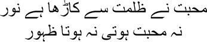
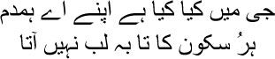
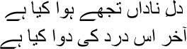
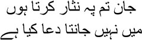
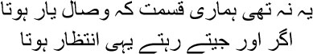
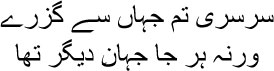

15

Love has snatched light out of the darkness
Without love there would have been no flowers
 ou were right, Manto bhai, I wasn’t asleep, I had merely shut my eyes. I didn’t feel up to talking. After 1857 I didn’t feel the urge to stay awake, in fact my only prayer to the lord was, Al-Rashid, lead me to my grave now. But even after losing my friends and family, I had to stay alive for twelve years more. Naturally. Did anything in my life ever go right? That was why I learnt to observe myself in the third person, even deriving joy from my own misery. Laugh if you like, but I began to see myself through my enemies’ eyes. With each whiplash of fate, I shouted to myself, ‘There, see, that dog Ghalib has been beaten up again. How vain you were, Ghalib. There isn’t another shair like you; who can match up to you in Farsi? And now see what’s been written next to your name. That you’re an inhabitant of dozakh, you swine.’ I’d burst into tears as I abused myself. Then even the tears dried up eventually; my eyes turned as arid as a desert. I used to pray to Him, no more tears, Allah, may blood flow from my eyes now, I want to die like an orphan with blood smeared on my face and my hands. But God was determined to show me hell on earth before sending me to my grave. Do you know why? I had committed only one sin—while the lord wanted to completely erase this mortal life, I had wanted to give a few moments from this life the taste of eternity—through my ghazals. How could the lord not punish me for it? Of course he had to. Who do you think you are, Mirza Ghalib, trying to create another universe next to the lord’s with your words? You’re an imbecile, a bewakoof. You write poetry, make up stories, paint pictures, compose melodies—what else are you but an imbecile? But what can one do, Manto bhai? I adore words, you see, I sieve out colours from words, I can hear melodies by entering deep within them, I can see the darkness too—that I can do all this is Allah’s gift. Must he punish me still? I understood the significance of this punishment much later. You have seen what cannot be seen; you have heard what cannot be heard; you have sensed what cannot be sensed; for this you must be punished. Because you tasted eternity, you must live through life in hell. Just as Al-Hallaj had to be punished. You want to build a new universe, but you will not bear its burden—how can that be possible?
ou were right, Manto bhai, I wasn’t asleep, I had merely shut my eyes. I didn’t feel up to talking. After 1857 I didn’t feel the urge to stay awake, in fact my only prayer to the lord was, Al-Rashid, lead me to my grave now. But even after losing my friends and family, I had to stay alive for twelve years more. Naturally. Did anything in my life ever go right? That was why I learnt to observe myself in the third person, even deriving joy from my own misery. Laugh if you like, but I began to see myself through my enemies’ eyes. With each whiplash of fate, I shouted to myself, ‘There, see, that dog Ghalib has been beaten up again. How vain you were, Ghalib. There isn’t another shair like you; who can match up to you in Farsi? And now see what’s been written next to your name. That you’re an inhabitant of dozakh, you swine.’ I’d burst into tears as I abused myself. Then even the tears dried up eventually; my eyes turned as arid as a desert. I used to pray to Him, no more tears, Allah, may blood flow from my eyes now, I want to die like an orphan with blood smeared on my face and my hands. But God was determined to show me hell on earth before sending me to my grave. Do you know why? I had committed only one sin—while the lord wanted to completely erase this mortal life, I had wanted to give a few moments from this life the taste of eternity—through my ghazals. How could the lord not punish me for it? Of course he had to. Who do you think you are, Mirza Ghalib, trying to create another universe next to the lord’s with your words? You’re an imbecile, a bewakoof. You write poetry, make up stories, paint pictures, compose melodies—what else are you but an imbecile? But what can one do, Manto bhai? I adore words, you see, I sieve out colours from words, I can hear melodies by entering deep within them, I can see the darkness too—that I can do all this is Allah’s gift. Must he punish me still? I understood the significance of this punishment much later. You have seen what cannot be seen; you have heard what cannot be heard; you have sensed what cannot be sensed; for this you must be punished. Because you tasted eternity, you must live through life in hell. Just as Al-Hallaj had to be punished. You want to build a new universe, but you will not bear its burden—how can that be possible?
But none of this occurred to me during the first eleven or twelve years after coming to Dilli. When you said a little earlier that I used to weep in the diwankhana, you were exaggerating. No, Manto bhai, I hadn’t learnt to shed tears as yet. I was disappointed and annoyed, I even felt very lonely at times, but clouds had not yet gathered in my eyes. First the earth has to be soaked, the vapour has to be created and made to rise to the sky, and only then will the clouds appear; all this takes time. And those were my salad days. Everyone used to look at me with wide eyes. Do you know why? My complexion was like a jasmine’s. When you see this Ghalib, stooped and wrinkled, you’ll never guess what that Ghalib looked like. Tall and slim, a head of curly hair, I could feel the touch of velvet when I ran my fingers through it. I knew that many of the ladies would be staring at me behind their curtain, Manto bhai. And why shouldn’t they? How many men could Dilli boast of, who were capable of competing with me? All of them dressed the same way, with their long hair and dense beards. All sheep, you see. So how was it possible that people would not stare at Mirza Ghalib when he went down the road in a palanquin? A thin kurta and pyjamas, with a jaamdaani design on the kurta, replete with floral and other patterns, and an Astrakhan hat. I tried to bring out my uniqueness in everything I did. I learnt all this from the Mirzanama. It was quite a book, my brothers, it had all the rules that told you how to be a proper prince, a proper Mirza. Do you suppose anyone can be a Mirza? It has its own methods. Your very dress will reveal whether you’re a Mirza or not. A Mirza will not converse with anyone except his peers. And in order to convey the fact that he’s different from the common man, the Mirza will never travel anywhere on foot, but always use a palanquin. If there’s something he likes at the market, the Mirza will buy it no matter how much it costs; he will not haggle over the price like others. What else must he do? He must invite rich people home for mehfils. Get this straight: the tobacco that is served must be fragrant and mixed with hashish. Ground pearls must be stirred into the wine. To be a Mirza you must be able to recite passages from Saadi’s Gulistan and Bustan from memory. Even more important, when you speak, your grammar must be flawless. You will have to quote stanzas from ghazals from time to time. Your favourite among flowers must be the narcissus. And your favourite among fruits, the orange. To him the fort at Agra is the greatest in the world, and the finest city of Persia is Isfahan. The Mirza will always loathe those who put gigantic turbans on their heads.
When I grew old, I wanted to laugh when I set eyes on this Mirza Ghalib. You know what, when a man is immersed in a dream, this is how he thinks of himself as unique. And then, when the dream is shattered, he slowly learns to put his feet back on the ground, realizes that the desire to be different from everyone else is nothing but the arrogance of youth. The truth is that every person is unique; no two persons are alike. Everyone is different in their own way. You have to pass through many Karbalas on the journey of life to learn this truth, Manto bhai.
No, please don’t be upset, my brothers, I will tell you the story you want to hear—of the Mirza Ghalib whose skin was the colour of jasmine. But remember, when you stand outside your own life and observe it, the story can never progress along a straight line—it is led by words branching off in different directions. I am looking back on a life that has ended. Since no new road will appear in this life anymore, many alternatives will present themselves to me; what if it had happened this way and not that, what would the outcome have been? I cannot reject any of these thoughts now.
You were right, Manto bhai, after leaving Mahroof sahib’s house I finally got the chance to spread my wings. I was choking to death over there. A man who wants to compose ghazals as well as lecture you cannot be tolerated very long. Their lives are like measuring tapes, and they want to trim the lives of other people to the same measurements. But I was an orphan, I had never seen my father; to me life was not something to be measured out. When I rented Sabban Khan’s house, I tasted independent life. Who could stop me now from drinking and gambling and visiting brothels? Some nights I went to bed with my wife, performing mechanically; she didn’t even want anything more. To her, two bodies came together only for the purpose of giving birth to children. They were born accordingly, and even died within a year and a half. How could they have survived, after all? They were not born in love. But it was also true that I paid no attention to their survival. If some of them had been alive, maybe my relationship with Begum would not have turned so cold. But I was drunk on the desire to be different. It’s the kind of drunkenness in which you will not consider a man a human being, you will try to dismiss everything you see and hear with laughter and ridicule. I was fully capable of this. Let me tell you a story, then. One evening a priest gave me a terrible lecture about drinking. Since alcohol is haraam, you will have to go to hell. When he had ranted for a long time, I couldn’t be quiet anymore. ‘What’s so bad about drinking, mian?’ I asked.
— The drunkard doesn’t understand that.
— Who does?
— The lord keeps an account of all this.
— What accounts does he keep?
— Accounts that render a drunkard’s prayers futile.
My pent up laughter burst out now. I said, ‘I have wine, mian, it can make me forget everything; why do I need to pray?’
Now I do realize that a drunkard’s prayers are indeed never met. The drunkard’s consciousness is stuck in a place from which he cannot perceive anything else. But still I couldn’t give up drinking. Alcohol creates a cloistered environment that you can never escape—you can only whirl about inside it. Caught in this tornado, you become even lonelier with every passing day.
To tell you the truth, I had arrived in Shahjahanabad with a great deal of hope. My reputation as a poet was growing, but there was no dearth of people to insult me at every mushaira. I did not want to write ghazals full of clichés as Zauq and Momin did. To me each word was like a crystal; when the light of the heart fell on a word, it gave birth to a rainbow. When I wandered about in Kale Mahal or on Akbarabad’s roads, I could hear the sounds of cascading tears concealed within words, Manto bhai. Do you know who wept inside those words? Souls that had been lost in the sky and the air and space. I could hear their sighs as I wrote my ghazals. Why would the people who sent mushairas into raptures every single day ever want to understand me? They had only one task—throw that bastard Ghalib out, humiliate him, he must never be allowed a place in the king’s court. The swine doesn’t care for anyone, doesn’t consider anyone his master. Indeed I don’t, I know that I’m the best after Amir Khusrau, I and I alone can hold aloft the banner of the Farsi ghazal. I don’t consider anyone without the guts to write ghazals in Farsi a poet, Manto bhai. There was no one in my life I could say these things to. I would say them to myself, alone, for my own benefit.
It was at such a time that she came into my life, my brothers. I only saw her eyes at first. And the moment I did, Mir sahib’s ghazal began humming in my head:

There’s so much in my heart, my soulmate
But not a single word reaches my lips
I had drunk a great deal that evening. I couldn’t go back home after leaving the kotha and fell asleep on its veranda. Someone awoke me from the depths of sleep. I saw only her eyes, the line of her kohl, and silken tears.
— Mirza sahib.
A voice engulfed me like a wind on a wintry night. I gazed only into her eyes and hundreds of birds were flying in them, as though it were dawn, the first dawn of my life, in her eyes. As though the painter Bihzad’s brush had painted a pair of eyes on a body made of air.
— Mirza sahib …
— Who are you? Kaun ho tum?
— Why didn’t you go back home?
— Home? I chuckled. —Where is it?
— Next to Habas Khan’s gate.
— But my home isn’t there.
She was quiet for the longest time. Then she said, ‘Come, let me take you home.’
— Why?
— You mustn’t languish here on the streets, Mirza sahib.
— Why not?
— Because you’re a poet without peer.
— Without peer?
— Truly, yes.
— Say it again.
— You’re a poet without peer. You’re benazir.
I grasped her hand. How warm it was, how hot. I held it against my mouth, I sucked on its flesh. She was dark as the night. And because of this, she dazzled in the darkness.
— Let me go, janab.
But I was entering her darkness. I wouldn’t be satisfied till I had clasped her to my breast. She allowed herself to be taken, without resisting. For the first time I got the scent of moist earth in a woman’s body, Manto bhai. The scent that the base of the tree gives out after it has rained. This was not the fragrance of ittar on the bodies of the courtesans in the kothas, this was the dark smell of a moist, ancient earth.
I was entranced by this smell, Manto bhai. She was no famous courtesan from a brothel. She was an ordinary domni. You do know what domnis did for a living, don’t you? They sang and danced at weddings to earn money, and they slept with men as well; but no refined Mirza would ever touch a domni. Their behaviour and speech belonged to the gutter. But Munira— Munirabai was different from the rest of them.
Munirabai gave me shelter in her room from that day on. She sang nobody’s ghazals but mine. When Munirabai sang, the glow of vermilion clouds would spread on her darkling face.
— Munira …
— Yes?
— Where did you hear my ghazals?
Munirabai would smile. ‘They fell from the heavens.’
— The sky?
— Yes.
— Where is that sky, those stars?
— Here. Munira would smile, her hand on her heart. ‘They’re in my breasts, janab.’
The sky was inside her breasts and my ghazals had dropped from this sky—nobody had ever described it like this before. Only Munirabai could put it this way. She had no monetary relationship with my ghazals. I clasped her to my breast. She disrobed behind the shield of my body. I seemed to be holding a black, moisture-laden cloud. Begum Falak Ara was a sunlit day in my life, Manto bhai, and Munira was like torrential rain, continuous. New green leaves sprang up on my body; believe me, when I sat in front of Munira, it was only her eyes that I saw, as swift as a doe but stilled every now and then. In those still eyes I could see fear, like a running deer stopping abruptly in its tracks.
They heaped calumny on me, Manto bhai. You’re Mirza Ghalib, very well, you may visit a kotha, you may even spend the night with a courtesan, but that doesn’t mean you can live with a domni in her house. Are you forgetting your position? What is one’s position, Manto bhai? When I was humiliated at the mushairas, she was the only one I could go to. She never said anything, she only sang my ghazals:

What’s wrong with you, innocent heart?
What’s the cure for this illness?
Deliverance lies where there is sanctuary. So I didn’t pay any heed to all the mud flung at me. Why should I tuck my tail between my legs and run away just because a commoner was throwing stones at me? I was never one to do that. I may not have gone to battle like my ancestors, but my life had become nothing but a battlefield, where I had to fight all by myself. To hell with what people said. When I was in bed with Munira I forgot all the humiliation heaped upon me, Munira made me forget it all, and I clung to her more and more with every passing day. As I heard her sing my ghazals one after the other, it occurred to me that for all their jibes at the mushairas, at least one woman was keeping my ghazals alive through her voice. I wanted to have Munira all to myself, I wouldn’t let her perform anywhere else. I wouldn’t let anyone visit her either. I took on the responsibility for her maintenance. Not that I was particularly well-off—all I had was the monthly pension of sixty-two rupees and fifty paise from the British. It was used to run the household, pay for my drinking and gambling, and now, for Munira’s expenses too. But then my mother’s sister used to send some money every month, as did Ahmed Buksh Khan from Loharu now and then; even my mother used to send me some money sometimes from Agra. But given my profligate ways, this was never enough. So I had to borrow. Back then, of course, people like Mathura Das or Darbari Mal or Khoobchand never turned down my requests for loans. All told, my days were passing quite enjoyably. And a hundred ghazals were being born around Munira.

I am charitable to you, my love
I do not know what prayer is
But one day some people stormed Munira’s house, beating her up and breaking things. Do you know why? So that she wouldn’t let me in anymore. But still I went, for I was adamant. Munira only wept, holding my hand. ‘Go away, Mirza sahib. If they see you …’
— What will they do? Will they beat me up?
— I don’t want your name to be besmirched.
— Do you also want me not to visit you anymore?
Drawing my head to the seclusion of her breast, she continued weeping and said, ‘I cannot live without you, Mirza sahib, you are my love. But still …’
I couldn’t imagine living without her either, Manto bhai. I was drawn to Munira as the moth to the flame. My life was incomplete without her beauty. Do you know how I felt? As though someone would steal her from me at any moment. I didn’t even go into the garden for a stroll with her, for I used to fear that the narcissus would forget its own beauty when it saw her and assume its human form to run to her. The more I explored Munirabai’s depths, the more I felt that I did not have her in all her fullness.

That was exactly how I felt. Complete union with her was not in my destiny. The longer I lived, the longer I would wait for her. Only once in my life was I able to love like this, Manto bhai. Firdausi among poets, Hasan Basri among sages and Majnu among lovers—these were the three beacons of the world. If you cannot love like Majnu I don’t call it love. I had dreamt of it, but I could not love like Majnu, Manto bhai. It was too arduous a path for me. How many of us can train our body and soul to forget ourselves? I could not.
I was extremely hurt at first, so I cut down on my visits to Munirabai. Gradually the hurt was erased. And so was she. Mughal blood is very cruel, Manto bhai; the same blood ran in my veins too. Do you know what this blood does? It kills the one it loves. I succeeded in forgetting her and getting involved with life in new ways. But Munira had locked herself up within me, no new paths opened up for her. Women are like that. Once they love someone, they cannot escape from the cage of this passion; even if they waste away and die they will confine themselves to the cage. Once upon a time I used to consider their world too narrow for my liking. But someone who can even die out of her love for a man has actually embarked on the ultimate journey, an endeavour to reach beyond the self and lose oneself in another. God did not give this life of noble pursuit to the male, Manto bhai. We are like moths, and they are like flames—they burn and destroy themselves to give out light. This is the love you will see in Meerabai’s songs, Manto bhai. Without Giridhari, Meera’s life was dark. Kaise jiyun re mai, Hari bine kaise jiyun. How will I live without Krishna, how will I live?
One day I heard that Munirabai had died. With her death, this maddening love, this bekhudi mohabbat, left me too. But her eyes didn’t leave me. Those eyes, just like the ones painted on a peacock’s tail, kept coming back to me. When death finally appeared to take my hand, I realized that I had indeed wanted to love Munira like Majnu did, or else she would not have appeared to me in my final moments.

It’s been long since my love was my guest
Long since the wine warmed the parlour
All these rigid rules choke my breath
I long to wear my torn clothes once more
Will my bleeding heart be mended, asks love
They’re just waiting to rub salt in my wounds
I want to be at my beloved’s doorstep again
Pleading with the doorman to let me in
My heart again seeks those easygoing days
When hours were spent in thoughts of my love
Don’t disturb me, Ghalib, my passion drives me on
I am waiting now with stormy, reckless will
Munirabai was gone. The miserable days became even more miserable, Manto bhai. Begum Falak Ara was a bolt of lightning in the sky of my existence, and Munirabai was the star whose light falls on our courtyard even millions of years after its death.
Night after night I gazed at the darkness of her death, reciting Mir sahib’s sher:

Munirabai, my love, you left the world carelessly, you did not notice that every spot here held a new world.